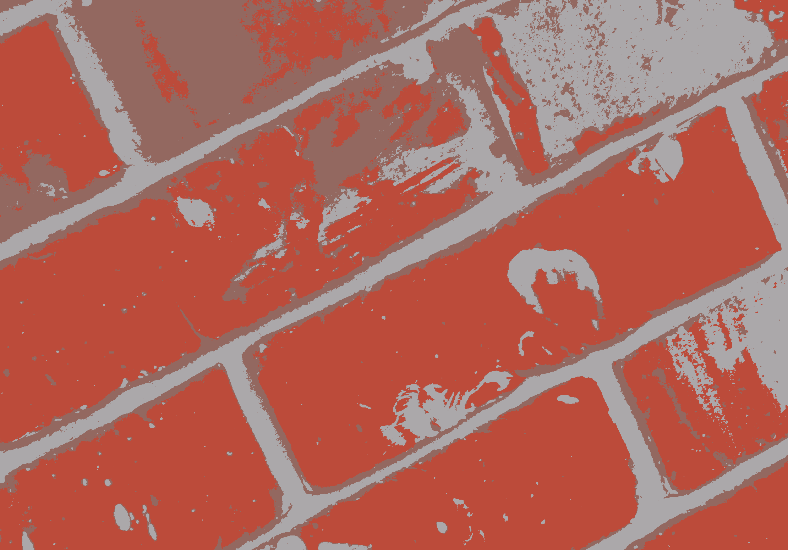
K-Means
Pixel clustering based on RGB distance from K centers.
[
code]

Mean Shift
Image segmentation based on RGB histogram peak climbing.
[
code]
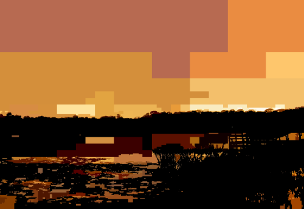
Split & Merge Segmentation
Region based image segmentation based on merging homogeneous regions and splitting of heterogeneous regions.
[
code]
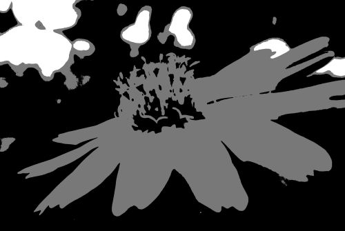
Balanced Histogram Thresholding
Image binarization threshold automatically selected with histogram medians.
[
code]
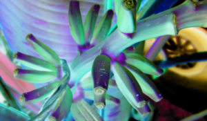
Image Kernels
General implementation of image kernels for any convolution matrix.
[
code]
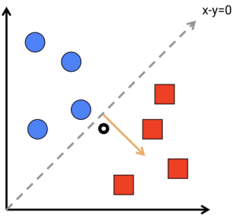
Perceptron Machine Learning
Linear pixel color classification based on
vectors.
[code]
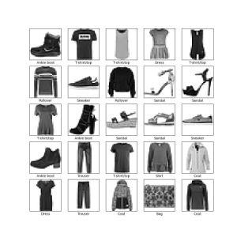
Keras Activation Methods
Tested various activation methods on mnist fashion dataset to see which had the best accuracy.
[
code]
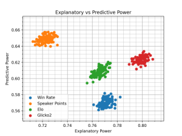
[Paper] Quantifying Skill in Lincoln-Douglas Debate
Research and evaluation of ranking systems such as Elo and Glicko-2.
[
article]
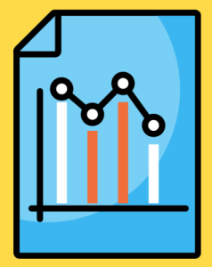
[Paper] Statistical Analysis of the Impact of the Transition to Online Tournaments in LD Debate
Determine affect of online debate on participation, speaker points, and side bias.
[
article]
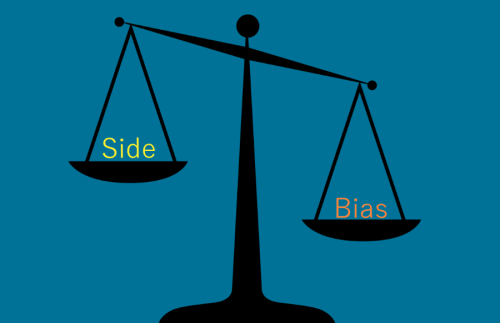
Lincoln Douglas Debate Slack App
Slack integration to scrape common debate websites and to retrive database stored arguments.
[
code]
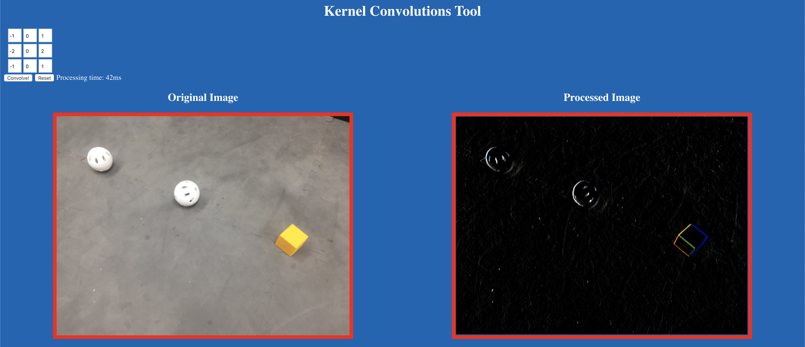
[Talk] Custom Vision for FTC, 2019 FIRST Championship Robotics Conference
Presented research on custom vision and machine learning for FTC teams. Discussed classical image processing, optimization methods, and deep learning approaches. Invited back for the 2020 World Championship.
[
code]
[
slides]
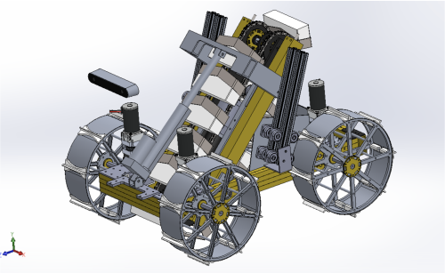
Lunar Knights Robotics Team Control Systems Lead
Compete in NASA Robotic Mining Competition. Lead design discussions and teach control system workshops. Wrote custom C++ and python libraries for control systems.
[
code]
[
notes]
FIRST Robotics FTC Team Control Systems Lead
Competed in FIRST Tech Challenge (2015 - 2019). Inspire Award Winner (2018 World Championship) - top overall team. Robot Semifinalist (2017 World Championship). Specialized in custom vision and machine learning algorithms.
[
code]
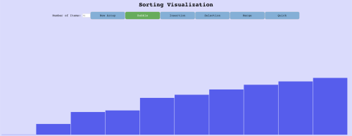
Sorting Methods
Graphical demonstration of common sorting algorithms.
[
demo]
[
code]
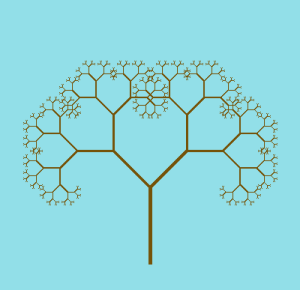
Assorted Projects
Ongoing repository to solidfy programming concepts. Projects included: interpreter for custom language syntax, steganography, and fractals.
[
repository]